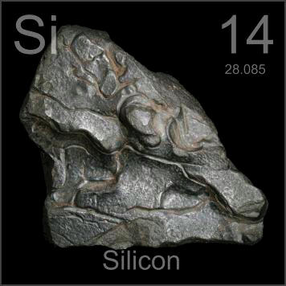

HOME
PREVIOUS
NEXT

Silicon
Atomic Weight: 28.085
Density: 2.33 g/cm3
Melting Point: 1414 °C
Boiling Point: 2900 °C
The first stage of silicon refining produces this irregular blob. After additional purification the silicon is grown into large single crystals to be cut into wafers, after which computer chips are etched onto the surface.